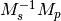

FPITCH (--fpicth) is made (FMIN, FMAX, and FPITCH).gruneisen.phonopy.yaml and phonopy_disp.yaml are written when running
phonopy.qpoints.hdf5 is written with the --hdf5 option. Dynamical
matrices are also stored in qpoints.hdf5 with WRITEDM =
.TRUE. (--writedm option).band.yaml as the calculator.band.yaml.--elk option) was added (Siesta & phonopy calculation)
by Henrique Pereira Coutada Miranda.WRITE_MESH = .FALSE. (--nowritemesh) tag was added
(WRITE_MESH).--hdf5 option. Some output files can be written in hdf5
format. See –hdf5.--elk option) was added (Elk & phonopy calculation).MESH_SYMMETRY = .FALSE. (--nomeshsym)
when PDOS is invoked.--wien2k, --abinit, --pwscf options have
been changed. Now they are just to invoke those calculator modes
without a unit cell structure file. The unit cell structure file is
specified using --cell (-c) option or CELL_FILENAME
tag. See Choice of force calculator, Wien2k & phonopy calculation,
Abinit & phonopy calculation, and Pwscf & phonopy calculation.gruneisen command, --factor, --nomeshsym,
--wien2k, --abinit, and --pwscf options are
implemented. See Abinit, Pwscf, and Wien2k interfaces and
Command options.phonopy-FHI-aims.MODULATION tag.Supercell class to build supercell--fc_computation_algorithm="regression" to
compute force constants from forces and displacements using linear
regression with displaying standard deviation, by KL(m).outcar-born is
improved.-v option shows Born effective charges and dielectric constants
when NAC is set.phonopy/file_IO/write_FORCE_SETS_*.vasprun.xml of VASP 5.2.8 is only specially parsed to treat
special wrong character.set_post_process,
set_force_sets will be obsolete. set_displacements is
obsolete.This version is dangerous. A lot of code is modified internally.
--thm option.-v option is enriched.outcar-born is implemented (Experimental).CUTOFF_FREQUENCY (--cutoff_freq) is
implemented to ignore frequencies lower than this cutoff frequency
to calculate thermal properties and thermal displacements.--mass option is created to shortcut of the MASS tag.--fc_spg_symmetry option is created to symmetrize force
constants.partial_dos.dat format was changed. XYZ projected PDOS is not
output. Instead atom projected PDOS (sum of XYZ projected PDOS)
is written. See Output files.omega_something is changed to freq_something.gruneisen didn’t run because it didn’t follow the move of
the file_IO.py file location. This is fixed.MP), q-points are automatically moved to inside
first-Brillouin-zone.MESH_SYMMETRY
= .FALSE.) is disabled.group_velocity/__init__.py is moved to phonon directory.hphonopy/file_IO.py is moved to top directory.harmonic/derivative_dynmat.py: Analytical derivatives of
dynamical matrix--gv_delta_q option.--pdos option was created. This is same as PDOS tag.CHARACTER_TABLE was renamed to IRREPS
(IRREPS), and the option of --ct was renamed to
--irreps as well. To show Ir-representations along with
characters, SHOW_IRREPS tag (or --show_irreps option) is
used. The output file name was also renamed to irreps.yaml. In
the ir-reps calculation, display and file outputs were modified to
show the arguments of complex value characters.thermal_displacement.py is slightly modified for the preparation
to include thermal displacement matrix.GROUP_VELOCITY tag or
--gv option (Group velocity).qpoints.yaml
when this is used togather with the QPOINTS mode. (WRITEDM)--irreps or IRREPS tag (Experimental).character_table.yaml output.MODULATION tag was modified. (Create modulated structure)--qpoints, --modulation and --anime options are prepared.--writefc option is implemented.MODULATION tag, phase factor for each mode can be
specified as the third value of each mode in degrees.get_modulation in Phonopy module were modified.
The phase factor is now included in phonon_modes.Phonopy was refactored. All private variables were renamed
as those starting with an underscore. Some basic variables are
obtained with the same variable names without the underscode, which
was implemented by the function property.BAND_LABELS (BAND_LABELS).--band option is implemented.GAMMA_CENTER tag and --gc, --gamma_center option are
implemented (MESH or MP).phonopy-qha was polished. Most of the code was moved to
phonopy/qha/__init__.py.Phonopy::get_mesh and Phonopy::get_band_structure were
modified. Instead of eigenvalues, frequencies are returned.Phonopy::get_thermal_properties
was changed as numpy arrays of temperatures, Helmhotlz free
energies, entropies, and heat capacities at constant volume.ThermalProperties, Dos, and
PartialDOS were changed. Instead of eigenvalues, frequencies are
used.force_constants.py to speed
up.--dim with 9 elements.--nac_old option.--nomeshsym is available on the manual.--symmetry option.settings.py, force_constant.py, etc.character_table.py (IRREPS).--readfc option is implemented.dynamical_matrix.py,
force_constant.py and _phonopy.c to make implementations
similar to the formulations often written in text books.settings.py is moved to phonopy/cui/Phonopy. The configure
parser from a file and options is modified.MODULATION tag was changed.--nosym is available on the manual.--symmetry optionget_surrounding_frame in cells.py by Jörg Meyer and Christian Carbogno.The cell matrix definition of Atoms class was transposed.
disp.yaml. Along this
modification, supercells with displacements can be created solely
from disp.yaml using dispmanager.TRANSLATION tag, FC_SYMMETRY is created
(FC_SYMMETRY).--fco option.example directory.propplot is updated for the --gnuplot option.The example of FORCE_SETS was wrong and was fixed. The explanation
of the document is correct.
BAND, now comma , can be used to
disconnect the sequence of band paths
(Band structure tags).dispmanager, an auxiliary tool for modifying disp.yaml, is
developed (dispmanager).--symmetry option.TRANSLATION, PERMUTATION, and MP_REDUCE
are ceased.Big phonopy-interface change was imposed. Some of filenames and
formats of input and output files are modified. There is no
default setting filename like INPHON (setting file is passed
as the first argument). Some of tag names and those usage are also
modified. Please first check Examples for the new usage.
List of changes:
These changes are applied only for the phonopy interface. Internal simulation code has not been touched, so physical results would not be affected. If you have any questions, please send e-mail to phonopy Mailing list.
phonopy-FHI-aims had not worked in some of previous
versions. Now it works by Jörg Meyer and Christian Carbogno.
Directory structure of the code was changed.
Symmetry finder update to spglib-1.0.2
[Experimental] Finding Bravais lattice using
--symmetry option.
[Experimental] Modulated structure along specified phonon modes
by MODULATION tag (Create modulated structure).
ANIME
tag format was changed.phonopy-qha is updated. A few options are added
(Options). Calculation under pressure is
supported by --pressure option.--symmetry option.PRIMITIVE_AXIS and
MATDIM. The 9 values are read from the first three to
the last three as respective rows of the matrices defined.-f option.phonopy-qha are modified and summarized
at Output files.vasprun.xml parser wrapper is implemened to avoid the broken
PRECFOCK in vasprun.xml of VASP 5.2.8.ANIME_TYPE supports xyz and xyz_jmol formats
by Jörg Meyer and Christian Carbogno, and also A set of ``POSCAR`
files corresponding to animation frames.trim_cell and
Primitive.__supercell_to_primitive_map in cells.py. When
 is not symmetric, the supercell was not created
correctly.phonopy-FHI-aims update by jm.arc didn’t work. Now it works.--vasp option is renamed to --cell or -c.--symmetry, --displacement or -d,
--dim, --primitive_axis are implemented.--ndim is replaced with --dim with -d option.The code on non-analytical term correction is included in the
DynamicalMatrix class. Data sets read by parse_BORN are set
by set_non_analytical_term and gotten by
get_non_analytical_term. The q-vector direction (only direction
is used in the non-analytical term correction) is set by
set_q_non_analytical_term. However for emprical damping
function, some distance is used, i.e., when a q-point is getting
away, non-analytical term is weaken. For this purpose, the second
argument of set_q_non_analytical_term is used.
At the same time, a small problem on the previous implementation was found. When a reduced q-point is out of the first Brillouin zone, it is not correctly handled. Currently it is fixed so as that when absolute values of elements of the reduced q-point are over 0.5, they are reduced into -0.5 < q < 0.5.
[Attention] The previous --nac option is moved to
--nac_old. --nac is used for different method of the
non-analytical term correction at general q-points. This will be
documented soon.
Bug fix on write_FORCES in file_IO.py. When order of
displacements in DISP file is not ascending order of atom indices,
it was not correctly re-ordered. Because the default order of
phonopy is ascending order, usually there is no problem for the most
users.
phonopy-FHI-aims
by Jörg Meyer and Christian Carbogno
phonopy-FHI-aims adapted to split of dos array into the two
seperate omega, dos arrays in TotalDOS class by Jörg Meyer.__init.py__) is heavily revised and the script
phonopy is rewritten using the phonopy module. Therefore there
may be bugs. Be careful. Document of the phonopy module will be
updated gradually.phonopy-FHI-aims and its examples are added by
Jörg Meyer.propplot is added.-f option to handle
large vasprun.xml files.bandplot and pdosplot are prepared.PERMUTATION tag to calculate symmetrized force
constants. Now it is fixed. Usually this is not necessary to set
because this does not affect to result.PM tag is implemented. See Setting tags. Behaviors in
the previous versions are PM = AUTO.phonopy is stored in the bin
directory. phonopy.py is renamed to phonopy.--fz tag was implemented experimentally. This is supposed to
enable to subtract residual forces on atoms in equilibrium structure
from those in structure with atomic displacements.